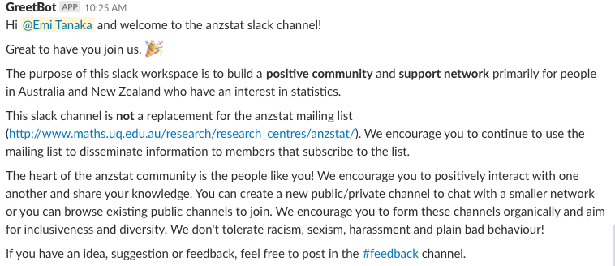
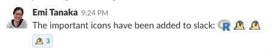

What is Slack?
Slack is a messaging platform. This is best explained by some demonstrations.
Getting Started
Everyone who joins will be greeted by a slackbot that will explain the general features of how to use slack and also a greetbot. The current message in greetbot will display

This greeting may be subject to change after community input.
Channel
There are various channels that people can join. Everyone is in the general, random and jobandopportunities channel. There are two types of channels: public and private. Everyone can browse, join and create public channels. Private channels can be created by anyone and can only be joined by invite. The current list of channels available are:
Posting
Posting a message is easy. You may want to think about what is the most appropriate channel to post. E.g. if you have a regional meeting then you may like to post to the corresponding region channel.
You can also post codes easily in slack:
Or make it a bit fun with emoticons:
 It is also easy to organise conversations by a thread within channels:
Note as above thread, only 10,000 messages will be viewable so old records will be deleted.